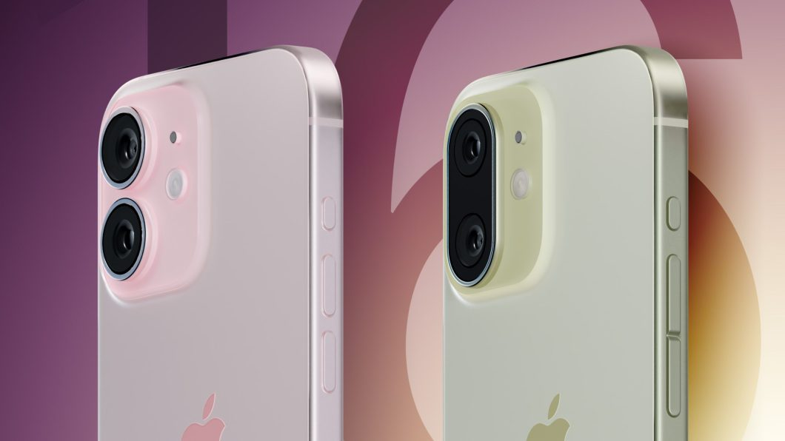
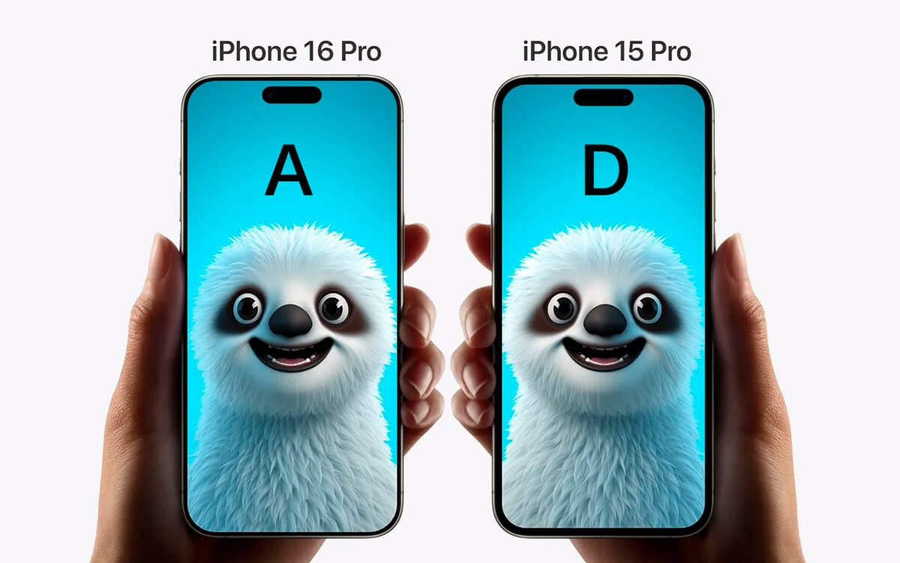
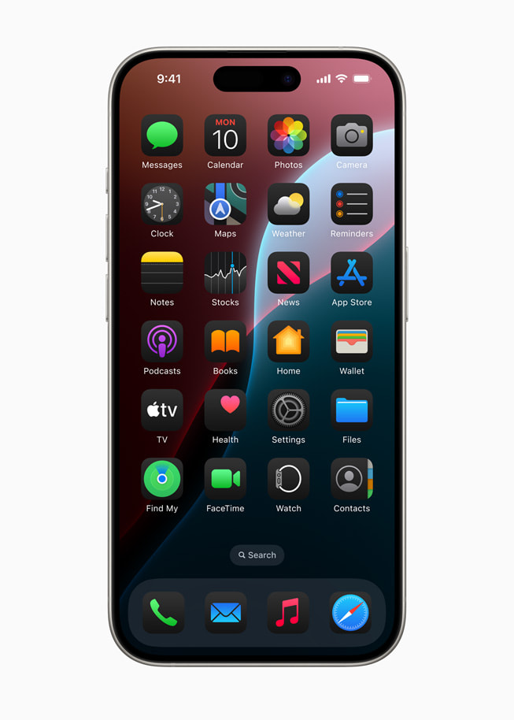

O Novo iPhone 16: Tudo o que Você Precisa Saber
Publicado em 5 de setembro de 2024
O aguardado iPhone 16 foi anunciado e promete revolucionar o mercado de smartphones com uma série de novos recursos e melhorias. Aqui está tudo o que você precisa saber sobre o novo dispositivo da Apple:
Design e Tela
O iPhone 16 apresenta um design inovador com uma tela de 6,7 polegadas Super Retina XDR OLED, oferecendo cores mais vibrantes e um contraste impressionante. O dispositivo é mais fino e leve do que seus predecessores, com bordas arredondadas e um acabamento em vidro fosco.
Câmera
A nova configuração de câmeras do iPhone 16 inclui um sensor principal de 48 MP, que promete capturar imagens ainda mais nítidas e detalhadas. Além disso, o dispositivo vem com uma lente ultra-angular de 12 MP e uma lente telefoto de 12 MP com zoom óptico de 3x. A Apple também introduziu um novo modo noturno aprimorado e capacidades de gravação de vídeo em 8K.
Desempenho e Bateria
Equipado com o chip A18 Bionic, o iPhone 16 oferece um desempenho significativamente melhorado em relação ao modelo anterior. A Apple afirma que o novo chip é 30% mais rápido e 20% mais eficiente em termos de energia. A bateria do iPhone 16 também foi otimizada, oferecendo até 2 horas a mais de uso em comparação com o iPhone 15.
Novidades de Software
O iPhone 16 vem com o iOS 18, que traz uma série de novas funcionalidades, incluindo um modo de personalização de tela inicial mais avançado, novas opções de widgets e melhorias na privacidade e segurança. A integração com o novo ecossistema da Apple, incluindo a nova versão do Apple Watch e o HomePod, promete uma experiência mais coesa.
Conclusão
O iPhone 16 está disponível para pré-venda a partir de 5 de setembro e promete ser um dos lançamentos mais emocionantes do ano. Com suas melhorias significativas em design, câmera e desempenho, ele certamente atrairá a atenção dos entusiastas de tecnologia e fãs da Apple.